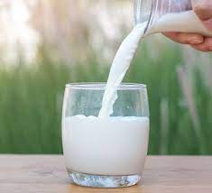

Pasteurization involves heating milk to kill bacteria, yeasts and molds. ... The most common method — used all over the world, including the US, UK, Australia and Canada — involves heating raw milk to 161.6°F (72°C) for around 40 seconds.
difference pasteurized and raw milk Humans first learned to consume the milk of other mammals regularly following the domestication of animals during the Neolithic Revolution or the development of agriculture. This development occurred independently in several global locations from as early as 9000–7000 BC in Mesopotamia to 3500–3000 BC in the Americas.
| raw milk | Pasteurized milk |
|---|---|